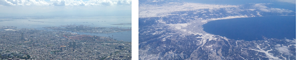

教授 (-2022.03) 朝倉康夫 ASAKURA Yasuo
助教/研究員 (-2022.03) 中西航 NAKANISHI Wataru (-> Kanazawa Univ.)
研究員 (-2022.03) 山田菊子 YAMADA-KAWAI Kiko (-> Sanada Lab., Tokyo Institute of Technology)
研究員 (-2022.03) 安藤宏恵 ANDO Hiroe (-> Kumamoto Univ.)
助教 (-2016.03) 日下部貴彦 KUSAKABE Takahiko (-> The Univ. of Tokyo)
学部/修士/博士/研究員(-2021.03) 杉下佳辰 SUGISHITA Kashin (-> Hanaoka Lab., Tokyo Institute of Technology )
研究員 (-2019.12) Rajali MAHARJAN
修士/博士/研究員(-2018.05) 瀬尾亨 SEO Toru (-> The Univ. of Tokyo -> Seo Lab., Tokyo Institute of Technology )
修士(神戸大)/博士/特別研究員(-2017.03) 坂井勝哉 Katsuya SAKAI (-> Kobe Univ. -> National Taiwan Univ. -> Osaka Univ.)
研究員 (2015年度まで) 定金乾一郎 Kenichiro SADAKANE
研究員 (2014年度まで) 柳原正実 Masami YANAGIHARA (-> Tokyo Metropolitan Univ.)
研究員 (2014年度まで) NGUYEN Xuan Long (-> Ho Chi Minh City Univ. of Technology)
研究員 (2012年度まで) Chong WEI (-> Beijing Jiaotong Univ.)
名誉秘書 (-2022.03) 八並美保 YATSUNAMI Miho
名誉秘書 (-2020.05) 五十嵐睦子 IGARASHI Mutsuko
名誉秘書 戸田はる香 Haruka TODA
名誉秘書 片山佳子 Yoshiko KATAYAMA
名誉秘書 林谷敦子 Atsuko HAYASHITANI
名誉秘書 鈴木啓子 Keiko SUZUKI
(*)2022.04から瀬尾研究室へ移籍
(*)博士D3 Garima DAHIYA
(*)学部/修士/博士D1長崎滉大 NAGASAKI Kota
(*)学部/修士M1 飯塚叶恵 IIZUKA Kanae
(*)学部/修士M1 イインホ LEE Inho
(*)学部/修士M1 山下直哉 YAMASHITA Naoya
(*)学部/修士M1 鐘恒毅 ZHONG Hengyi
博士 (-2022.03) 周子軒 ZHOU Zixuan
学部/修士 (-2022.03) 山下優希 YAMASHITA Yuki
修士 (-2022.03) 陳野由 JINNO Yu
修士 (-2022.03) 小林秀佑 KOBAYASHI Shusuke
修士 (-2022.03) 小暮遼河 KOGURE Ryoga
学部/修士 (-2022.03) 永井一輝 NAGAI Kazuki
修士 (-2022.03) 安田雄亮 YASUDA Yusuke
学部/修士 (-2022.03) 吉田光太朗 YOSHIDA Kotaro
学部 (-2022.03) 藤谷慶一朗 FUJIYA Keiichiro
学部 (-2022.03) 水野憲弥 MIZUNO Kenya
修士 (-2020.09) 班嘉悦 BAN Jiayue
修士 (-2020.03) 小池卓武 KOIKE Takumu
学部/修士 (-2020.03) 小泉大哉 KOIZUMI Daiya
博士 (-2019.03) LYKOV Stanislav
修士 (-2019.03) CHOOKA Sarah Namukonde
修士 (-2019.03) 劉彬 LIU Bin
学部/修士 (-2019.03) 金氏直也 KANEUJI Naoya
学部/修士 (-2019.03) 尾頭尚人 OGASHIRA Naoto
学部/修士 (-2018.03) 愛甲聡美 AIKO Satomi
学部/修士 (-2018.03) 川崎雄嵩 KAWASAKI Yutaka
博士(-2017.09) THAITHATKUL Phathinan (Lamp) (-> The Univ. of Tokyo -> Chulalongkorn Univ.)
学部/修士 (-2017.03) 板橋遼 Ryo ITABASHI
学部/修士 (-2017.03) 後藤啓人 Hiroto GOTO
学部/修士 (2015年度まで) 増山和大 Kazuhiro MASUYAMA
学部 (2015年度まで) 吉田麻由美 Mayumi YOSHIDA
学部/修士 (2014年度まで) 成岡尚哉 Naoya NARIOKA
学部/修士 (2014年度まで) 目黒謙一 Ken-ichi MEGURO
修士 (2013年度まで) 牛木隆匡 Takamasa USHIKI
学部/修士 (2013年度まで) 中野悠太 Yuta NAKANO
修士(神戸大) (-2013.03) 社領沢 Taku SHARYO
修士(神戸大) (-2013.03) 小島洋人 Hiroto KOJIMA
Undergraduate (2019) 山木聡一郎 YAMAKI Soichiro (Hokkaido Univ.)
Doctoral (2019) 安田昌平 YASUDA Shohei (Kobe Univ.)
Professor (2019) Seungjae Lee (The Univ. of Seoul)
Professor (2018) Judith Wang (Univ. of Leeds)
Undergraduate (2018) Hanang Himawan
Professor (2017) Yu (Marco) Nie (Northwestern Univ.)
Doctoral (2017) CAO Zhejing
Doctoral (2017) TANG Yili
Master (2016) Monika Kristyana PUTRI
Master (2016) Eric MARRE
Doctoral (2015) Ahmed Mohamed Abdelhamid ELKAFOURY
Undergraduate (2014) Hengguang Joel HAN
(旧)福田研(2020年4月に福田准教授が東京大学へ転職したことに伴う所属)
Those who belong to (ex-)Fukuda lab. (as Prof. Fukuda moved to The Univ. of Tokyo in April 2020).
修士 -2022.03 木村彗留 KIMURA Satoru
修士 -2022.03 櫻井陸斗 SAKURAI Rikuto
修士 -2022.03 田淵景子 TABUCHI Keiko
修士 -2022.03 鵜飼健太 UKAI Kenta
研究員 -2021.03 壇辻貴生 DANTSUJI Takao
修士 -2021.03 五百蔵夏穂 IHOROI Natsuho
修士 -2021.03 北侑祐 KITA Yusuke
修士 -2021.03 清水裕斗 SHIMIZU Yuto
博士 -2020.09 岡英紀 OKA Hideki
修士 -2020.09 王英帥 WANG Yingshuai
Copyright © 2022 | Asakura Laboratory